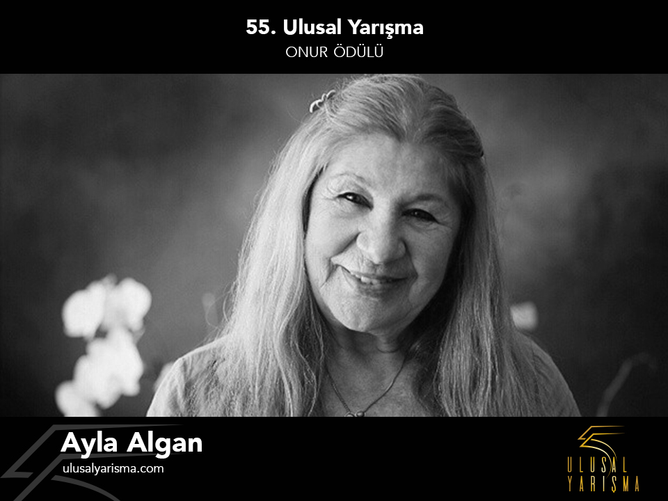

ONUR ÖDÜLÜ

“Karanlıkta Uyananlar” Türkiye’nin grev konulu ilk filmi olması ve bugün bile bize ilham veren öyküsünün yanında, sinemamıza büyük bir sanatçıyı da kazandırmıştı: Ayla Algan. Algan, New York Actor’s Repertory Theatre’da aldığı eğitimin ardından 1960 yılında İstanbul Şehir Tiyatrosu’na girdi, 1961’da “Tarla Kuşu” oyunuyla Türkiye’de ilk kez sahneye çıktı. Aynı yıl, rejisörlüğünü Muhsin Ertuğrul’un yaptığı “Hamlet” oyununda, hem Ophelia’ yı hem de Hamlet’i canlandırdı; sayılı “Kadın Hamlet”ten biri oldu.
Ayla Algan’ın 1965’te Ertem Göreç ile başlayan sinema macerası, Halit Refiğ, Atıf Yılmaz, Memduh Ün, Tunç Başaran, Aram Gülyüz, Ferzan Özpetek, Barış Pirhasan gibi yönetmenlerle devam etti. Aynı zamanda şarkı da söyleyen ve 1971’de Paris’in ünlü konser salonu Olympia’ da sahneye çıkan Algan, 1972’de Devlet Sanatçısı ünvanı aldı ve UNICEF Onur Ödülü’ne layık görüldü.
Bugüne kadar çoğu kadın hikayelerini anlatan oyunlara yönetmenlik yaptı, sayısız oyuncuyu yetiştirdi.
55. Ulusal Yarışma, cesur rol seçimleri, karakterlere kattığı derin ve dokunaklı yaklaşımı, eğitmen olarak oyunculuğa yaptığı sonsuz katkı sebebiyle bu yılki Onur Ödülü’nü Ayla Algan’a sunacaktır.